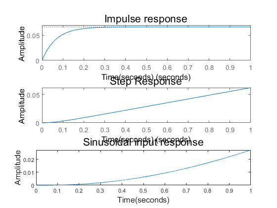
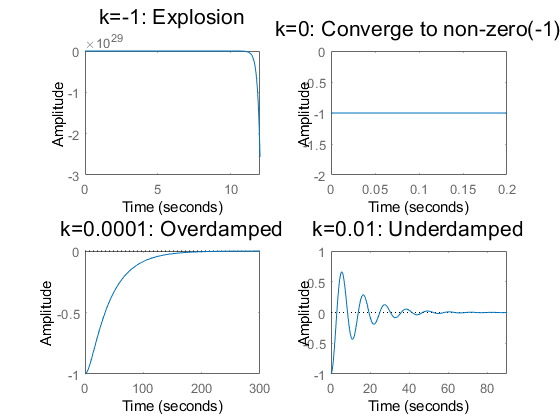

Contents
close all
clear all
clc
Linearization
syms x xdot y ydot z zdot phi theta psi p q r
syms u1 u2 u3 u4
syms m g I_x I_y I_z k_x k_y k_z k_p k_q k_r
syms z_d psi_d
states = [x y z xdot ydot zdot phi theta psi p q r];
inputs = [u1 u2 u3 u4];
equilibrium = [0 0 z_d 0 0 0 0 0 psi_d 0 0 0 m*g 0 0 0];
xddot = (1/m)*((cos(phi)*sin(theta)*cos(psi) + sin(phi)*sin(psi))*u1 - k_x*xdot);
yddot = (1/m)*((cos(phi)*sin(theta)*sin(psi) - sin(phi)*cos(psi))*u1 - k_y*ydot);
zddot = (1/m)*(cos(phi)*cos(theta)*u1 - m*g - k_z*zdot);
phi_dot = p + sin(phi)*tan(theta)*q + cos(phi)*tan(theta)*r;
theta_dot = cos(phi)*q - sin(phi)*r;
psi_dot = (sin(phi) * q)/cos(theta) + (cos(phi) * r)/cos(theta);
pdot = (1/I_x)*((I_y - I_z)*q*r + u2 - k_p*p);
qdot = (1/I_y)*((I_z - I_x)*p*r + u3 - k_q*q);
rdot = (1/I_z)*((I_x - I_y)*p*q + u4 - k_r*r);
sys = [xdot, ydot, zdot, xddot, yddot, zddot, phi_dot, theta_dot, psi_dot, pdot, qdot, rdot];
y = [x y z psi];
Asym = subs(jacobian(sys, states), [states inputs], equilibrium);
Bsym = subs(jacobian(sys, inputs), [states inputs], equilibrium);
Csym = subs(jacobian(y, states), [states inputs], equilibrium);
Dsym = subs(jacobian(y, inputs), [states inputs], equilibrium);
parameters = [m g I_x I_y I_z k_x k_y k_z k_p k_q k_r z_d psi_d];
numerics = [0.03 9.81 1.5e-5 1.5e-5 3e-5 4.5e-3 4.5e-3 4.5e-3 4.5e-4 4.5e-4 4.5e-4 2 pi/4];
A = double(vpa(subs(Asym, parameters, numerics)));
B = double(vpa(subs(Bsym, parameters, numerics)));
C = double(vpa(subs(Csym, parameters, numerics)));
D = double(vpa(subs(Dsym, parameters, numerics)));
sys = ss(A, B, C, D);
TF = tf(sys);
TF(3,1)
TF(4,4)
ans =
33.33
------------
s^2 + 0.15 s
Continuous-time transfer function.
ans =
3.333e04
----------
s^2 + 15 s
Continuous-time transfer function.
Stability
[V,D,W] = eig(A);
[V_Jordan, J] = jordan(A);
J
J =
列 1 至 7
0 1.0000 0 0 0 0 0
0 0 0 0 0 0 0
0 0 -30.0000 0 0 0 0
0 0 0 -0.1500 0 0 0
0 0 0 0 0 1.0000 0
0 0 0 0 0 0 0
0 0 0 0 0 0 -30.0000
0 0 0 0 0 0 0
0 0 0 0 0 0 0
0 0 0 0 0 0 0
0 0 0 0 0 0 0
0 0 0 0 0 0 0
列 8 至 12
0 0 0 0 0
0 0 0 0 0
0 0 0 0 0
0 0 0 0 0
0 0 0 0 0
0 0 0 0 0
0 0 0 0 0
-0.1500 0 0 0 0
0 -15.0000 0 0 0
0 0 0 0 0
0 0 0 -0.1500 0
0 0 0 0 0
Forced Response
A_heading = [A(9,9) A(9,12); A(12,9) A(12,12)];
B_heading = [B(9,4); B(12,4)];
C_heading = [C(4,9) C(4,12)];
D_heading = 0;
sys_heading = ss(A_heading, B_heading, C_heading, D_heading);
subplot(3,1,1);
impulse(3e-5*sys_heading, 1);
ylim([0, 0.07])
title("Impulse response", 'FontSize',16);
xlabel("Time(seconds)", 'FontSize',12)
ylabel("Amplitude", 'FontSize',12)
subplot(3,1,2);
step(3e-5*sys_heading, 1);
title("Step Response", 'FontSize',16);
xlabel("Time(seconds)", 'FontSize',12)
ylabel("Amplitude", 'FontSize',12)
data_points = 10000;
stoptime = 1;
dt = 1/data_points;
t = (0:dt:stoptime);
u = 3e-5*sin(t);
y = lsim(sys_heading, u, t);
subplot(3,1,3);
plot(t,y);
title("Sinusoidal input response", 'FontSize',16);
xlabel("Time(seconds)", 'FontSize',12)
ylabel("Amplitude", 'FontSize',12)

Proportional Control
A_altitude = [A(3,3) A(3,6); A(6,3) A(6,6)];
B_altitude = [B(3,1); B(6,1)];
C_altitude = [1 0];
D_altitude = 0;
x0 = [-1;0];
k = -1;
A_controlled_altitude = A_altitude - k*B_altitude*C_altitude;
sys_altitude = ss(A_controlled_altitude, [], C_altitude, []);
subplot(2,2,1)
initial(sys_altitude, x0);
title("k=-1: Explosion", 'Fontsize',16)
k = 0;
A_controlled_altitude = A_altitude - k*B_altitude*C_altitude;
sys_altitude = ss(A_controlled_altitude, [], C_altitude, []);
subplot(2,2,2)
initial(sys_altitude, x0);
title("k=0: Converge to non-zero(-1)", 'Fontsize',16)
k = 0.0001;
A_controlled_altitude = A_altitude - k*B_altitude*C_altitude;
sys_altitude = ss(A_controlled_altitude, [], C_altitude, []);
subplot(2,2,3)
initial(sys_altitude, x0);
title("k=0.0001: Overdamped", 'Fontsize',16)
k = 0.01;
A_controlled_altitude = A_altitude - k*B_altitude*C_altitude;
sys_altitude = ss(A_controlled_altitude, [], C_altitude, []);
subplot(2,2,4)
initial(sys_altitude, x0);
title("k=0.01: Underdamped", 'Fontsize',16)
